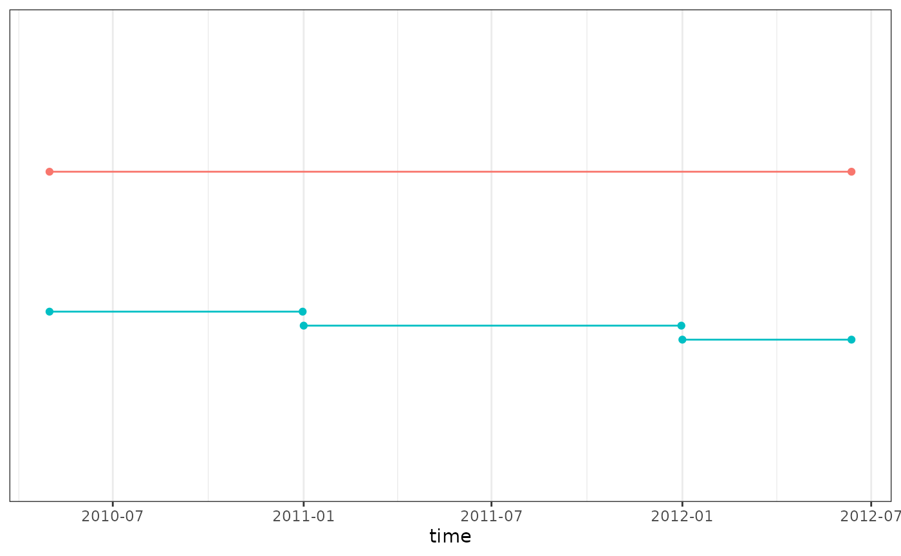

Introduction
In this vignette we show how to split existing cohorts. We are going
to use the GiBleed database to conduct the different examples.
To make sure GiBleed database is available you can use the
function requireEunomia() so let’s get started.
Load necessary packages:
library(omock)
library(PatientProfiles)
library(CohortConstructor)
library(dplyr, warn.conflicts = FALSE)
library(clock)Create cdm_reference object from GiBleed
database:
cdm <- mockCdmFromDataset(datasetName = "GiBleed", source = "duckdb")Let’s start by creating two drug cohorts, one for users of diclofenac and another for users of acetaminophen.
cdm$medications <- conceptCohort(cdm = cdm,
conceptSet = list("diclofenac" = 1124300L,
"acetaminophen" = 1127433L),
name = "medications")
cohortCount(cdm$medications)
#> # A tibble: 2 × 3
#> cohort_definition_id number_records number_subjects
#> <int> <int> <int>
#> 1 1 9365 2580
#> 2 2 830 830
settings(cdm$medications)
#> # A tibble: 2 × 4
#> cohort_definition_id cohort_name cdm_version vocabulary_version
#> <int> <chr> <chr> <chr>
#> 1 1 acetaminophen 5.3 v5.0 18-JAN-19
#> 2 2 diclofenac 5.3 v5.0 18-JAN-19stratifyCohorts
If we want to create separate cohorts by sex we could use the
function requireSex():
cdm$medications_female <- cdm$medications |>
requireSex(sex = "Female", name = "medications_female") |>
renameCohort(
newCohortName = "{cohort_name}_female"
)
cdm$medications_male <- cdm$medications |>
requireSex(sex = "Male", name = "medications_male") |>
renameCohort(
newCohortName = "{cohort_name}_male"
)
cdm <- bind(cdm$medications_female, cdm$medications_male, name = "medications_sex")
cohortCount(cdm$medications_sex)
#> # A tibble: 4 × 3
#> cohort_definition_id number_records number_subjects
#> <int> <int> <int>
#> 1 1 4718 1316
#> 2 2 435 435
#> 3 3 4647 1264
#> 4 4 395 395
settings(cdm$medications_sex)
#> # A tibble: 4 × 5
#> cohort_definition_id cohort_name cdm_version vocabulary_version sex
#> <int> <chr> <chr> <chr> <chr>
#> 1 1 acetaminophen_female 5.3 v5.0 18-JAN-19 Fema…
#> 2 2 diclofenac_female 5.3 v5.0 18-JAN-19 Fema…
#> 3 3 acetaminophen_male 5.3 v5.0 18-JAN-19 Male
#> 4 4 diclofenac_male 5.3 v5.0 18-JAN-19 MaleThe stratifyCohorts() function will produce a similar
output but it relies on a column being already created so let’s first
add a column sex to my existent cohort:
cdm$medications <- cdm$medications |>
addSex()
cdm$medications
#> # Source: table<og_009_1761026127> [?? x 5]
#> # Database: DuckDB 1.4.1 [unknown@Linux 6.11.0-1018-azure:R 4.5.1//tmp/Rtmp4JlD0Y/file2a3045077206.duckdb]
#> cohort_definition_id subject_id cohort_start_date cohort_end_date sex
#> <int> <int> <date> <date> <chr>
#> 1 1 78 2009-04-14 2009-04-21 Male
#> 2 1 141 1987-03-16 1987-03-30 Female
#> 3 1 300 2005-06-16 2005-06-30 Female
#> 4 1 300 2007-08-21 2007-08-28 Female
#> 5 1 352 1991-09-11 1991-09-18 Male
#> 6 1 842 1970-10-20 1970-11-10 Male
#> 7 1 921 1983-03-25 1983-06-23 Female
#> 8 1 1099 2005-09-06 2005-09-20 Male
#> 9 1 1169 1937-12-03 1937-12-17 Female
#> 10 1 1808 2014-04-27 2014-05-04 Female
#> # ℹ more rowsNow we can use the function stratifyCohorts() to create
a new cohort based on the sex column, one new cohort will
be created for any value of the sex column:
cdm$medications_sex_2 <- cdm$medications |>
stratifyCohorts(strata = "sex", name = "medications_sex_2")
cohortCount(cdm$medications_sex_2)
#> # A tibble: 4 × 3
#> cohort_definition_id number_records number_subjects
#> <int> <int> <int>
#> 1 1 4718 1316
#> 2 2 4647 1264
#> 3 3 435 435
#> 4 4 395 395
settings(cdm$medications_sex_2)
#> # A tibble: 4 × 9
#> cohort_definition_id cohort_name target_cohort_id target_cohort_name
#> <int> <chr> <int> <chr>
#> 1 1 acetaminophen_female 1 acetaminophen
#> 2 2 acetaminophen_male 1 acetaminophen
#> 3 3 diclofenac_female 2 diclofenac
#> 4 4 diclofenac_male 2 diclofenac
#> # ℹ 5 more variables: cdm_version <chr>, vocabulary_version <chr>,
#> # target_cohort_table_name <chr>, strata_columns <chr>, sex <chr>Note that both cohorts can be slightly different, in the first case
four cohorts will always be created, whereas in the second one it will
rely on whatever is in the data, if one the diclofenac cohort does not
have ‘Female’ records the diclofenac_female cohort is not
going to be created, if we have individuals with sex ‘None’ then a
{cohort_name}_none cohort will be created.
The function is very powerful and multiple cohorts can be created in one go, in this example we will create cohorts by “age and sex” and by “year”.
cdm$stratified <- cdm$medications |>
addAge(ageGroup = list("child" = c(0,17), "18_to_65" = c(18,64), "65_and_over" = c(65, Inf))) |>
addSex() |>
mutate(year = get_year(cohort_start_date)) |>
stratifyCohorts(strata = list(c("sex", "age_group"), "year"), name = "stratified")
cohortCount(cdm$stratified)
#> # A tibble: 232 × 3
#> cohort_definition_id number_records number_subjects
#> <int> <int> <int>
#> 1 1 2941 2894
#> 2 2 380 370
#> 3 3 1397 1382
#> 4 4 2916 2857
#> 5 5 336 328
#> 6 6 1395 1373
#> 7 7 435 435
#> 8 8 0 0
#> 9 9 0 0
#> 10 10 395 395
#> # ℹ 222 more rows
settings(cdm$stratified)
#> # A tibble: 232 × 11
#> cohort_definition_id cohort_name target_cohort_id target_cohort_name
#> <int> <chr> <int> <chr>
#> 1 1 acetaminophen_femal… 1 acetaminophen
#> 2 2 acetaminophen_femal… 1 acetaminophen
#> 3 3 acetaminophen_femal… 1 acetaminophen
#> 4 4 acetaminophen_male_… 1 acetaminophen
#> 5 5 acetaminophen_male_… 1 acetaminophen
#> 6 6 acetaminophen_male_… 1 acetaminophen
#> 7 7 diclofenac_female_1… 2 diclofenac
#> 8 8 diclofenac_female_6… 2 diclofenac
#> 9 9 diclofenac_female_c… 2 diclofenac
#> 10 10 diclofenac_male_18_… 2 diclofenac
#> # ℹ 222 more rows
#> # ℹ 7 more variables: cdm_version <chr>, vocabulary_version <chr>,
#> # target_cohort_table_name <chr>, strata_columns <chr>, sex <chr>,
#> # age_group <chr>, year <dbl>A total of 232 cohorts were created in one go, 12 related to sex & age group combination, and 220 by year.
Note that these year cohorts were created based on the prescription start date, but they can have end dates after that year. If you want to split the cohorts on yearly contributions see the next section.
yearCohorts
yearCohorts() is a function that is used to split the
contribution of a cohort into the different years that is spread across,
let’s see this simple example:

In this example we have an individual that has a cohort entry that starts on the ‘2010-05-01’ and ends on the ‘2012-06-12’ then its contributions will be split into three contributions:
- From ‘2010-05-01’ to ‘2010-12-31’.
- From ‘2011-01-01’ to ‘2011-12-31’.
- From ‘2012-01-01’ to ‘2012-06-12’.
So let’s use it in one example:
cdm$medications_year <- cdm$medications |>
yearCohorts(years = c(1990:1993), name = "medications_year")
settings(cdm$medications_year)
#> # A tibble: 8 × 7
#> cohort_definition_id cohort_name target_cohort_definition…¹ cdm_version
#> <int> <chr> <int> <chr>
#> 1 1 acetaminophen_1990 1 5.3
#> 2 2 diclofenac_1990 2 5.3
#> 3 3 acetaminophen_1991 1 5.3
#> 4 4 diclofenac_1991 2 5.3
#> 5 5 acetaminophen_1992 1 5.3
#> 6 6 diclofenac_1992 2 5.3
#> 7 7 acetaminophen_1993 1 5.3
#> 8 8 diclofenac_1993 2 5.3
#> # ℹ abbreviated name: ¹target_cohort_definition_id
#> # ℹ 3 more variables: vocabulary_version <chr>, year <int>,
#> # target_cohort_name <chr>
cohortCount(cdm$medications_year)
#> # A tibble: 8 × 3
#> cohort_definition_id number_records number_subjects
#> <int> <int> <int>
#> 1 1 200 191
#> 2 2 16 16
#> 3 3 196 191
#> 4 4 12 12
#> 5 5 201 194
#> 6 6 13 13
#> 7 7 211 207
#> 8 8 15 15Note we could choose the years of interest and that invididuals.
Let’s look closer to one of the individuals
(person_id = 4383) that has 6 records:
cdm$medications |>
filter(subject_id == 4383)
#> # Source: SQL [?? x 5]
#> # Database: DuckDB 1.4.1 [unknown@Linux 6.11.0-1018-azure:R 4.5.1//tmp/Rtmp4JlD0Y/file2a3045077206.duckdb]
#> cohort_definition_id subject_id cohort_start_date cohort_end_date sex
#> <int> <int> <date> <date> <chr>
#> 1 1 4383 1990-10-13 1990-10-27 Male
#> 2 1 4383 2000-03-12 2000-03-19 Male
#> 3 1 4383 1971-02-06 1971-02-13 Male
#> 4 1 4383 2004-05-21 2004-06-11 Male
#> 5 1 4383 1990-12-20 1991-01-03 Male
#> 6 1 4383 1992-07-18 1992-08-22 MaleFrom the 6 records only 3 are within our period of interest
1990-1993, there are two contributions that start and end
in the same year that’s why they are going to be unaltered and just
assigned to the year of interest. But one of the cohort entries starts
in 1990 and ends in 1991, then their contribution will be split into the
two years, so we expect to see 4 cohort contributions for this subject
(2 in 1990, 1 in 1991 and 1 in 1992):
cdm$medications_year |>
filter(subject_id == 4383)
#> # Source: SQL [?? x 5]
#> # Database: DuckDB 1.4.1 [unknown@Linux 6.11.0-1018-azure:R 4.5.1//tmp/Rtmp4JlD0Y/file2a3045077206.duckdb]
#> cohort_definition_id subject_id cohort_start_date cohort_end_date sex
#> <int> <int> <date> <date> <chr>
#> 1 1 4383 1990-10-13 1990-10-27 Male
#> 2 1 4383 1990-12-20 1990-12-31 Male
#> 3 3 4383 1991-01-01 1991-01-03 Male
#> 4 5 4383 1992-07-18 1992-08-22 Male